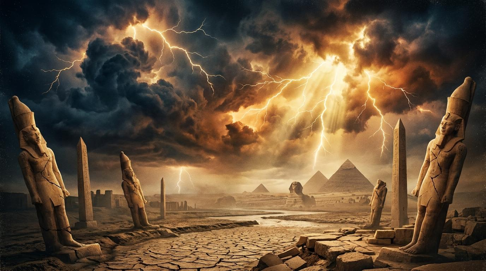

「耶和華必擊打埃及，又擊打又醫治，埃及人就歸向耶和華。他必應允他們的禱告，醫治他們。」 (以賽亞書 19:22)
歷史 · 人文 · 政治
當人為的倚靠失去效用 (賽 19:1-4)
論埃及的默示：看哪，耶和華乘駕輕快的雲，臨到埃及... 我必將埃及人交在殘暴主的手中；強暴王必轄制他們。
為什麼神要先對付埃及的「偶像」並讓他們陷入內戰？
偶像是人內心安全感的投射。埃及的穩定建立在虛假的神明與人類集權上。神藉由分裂拆毀了對「人造安全感」的迷信。這提醒我們，神有時也會任憑我們倚靠的體制發生動盪，讓我們看見唯祂是真拯救。
看透世界的虛空 (賽 19:5-15)
海中的水必絕盡，河也乾涸枯竭... 耶和華使乖謬的靈摻入埃及中間... 所做之工都不成就。
當我們生活中的「尼羅河」枯乾時，我們的反應是什麼？
當資源枯竭（收入、才華、人脈），人往往會像經文中的謀士般感到困惑、走錯路。這提醒我們，真正的智慧與供應源於神。危機是神剝奪我們對物質依賴的過程，逼使我們仰望天上的供應。
又擊打又醫治的恩典 (賽 19:16-22)
到那日，埃及人必認識耶和華... 耶和華必擊打埃及，又擊打又醫治，埃及人就歸向耶和華。他必應允他們的禱告，醫治他們。
如何理解神「又擊打又醫治」的屬性？
擊打與醫治是一體兩面。擊打不是為了毀滅，而是像外科醫生的手術刀，切除生命中的毒瘤。當埃及被逼到絕境，呼求神時，神就差遣救主。祂願意打碎我們，好讓我們能得著真正的完整。
講道主題
弟兄姊妹們，當我們面對生活中的風暴時，我們第一個想抓取的是什麼？在古代的近東，猶大國面對強敵亞述的威脅時，他們總是習慣性地向南看——看著那個擁有豐富尼羅河資源、深厚智慧文化與強大軍事力量的超級大國「埃及」。埃及，是他們的避風港，是他們的偶像。
經文第1節說：「看哪，耶和華乘駕輕快的雲，臨到埃及。埃及的偶像在他面前戰兢；埃及人的心在裡面消化。」 埃及人引以為傲的社會穩定瞬間瓦解。神宣告祂必激動埃及人攻擊埃及人。弟兄姊妹，偶像是什麼？偶像就是我們心中那些「沒有神，我也能過得很好」的保障。
為什麼神要這麼做？因為神要拆毀那些虛假的避難所。當我們把安全感建立在人的身上、建立在公司的地位上，神有時會容許這些事物發生動盪。就像鐵達尼號的沉沒，打破了人類對科技全能的迷信。
不僅社會動盪，接下來神切斷了埃及的命脈。第5節說：「海中的水必絕盡，河也乾涸枯竭。」 尼羅河是埃及財富的來源。但神說，水要枯乾，漁夫要哀哭，紡織業要羞愧。
當我們生活中的「尼羅河」突然枯乾時，我們往往會像埃及的謀士一樣，東倒西歪、不知所措。2008年的金融海嘯就是最好的例子，全世界最聰明的腦袋，也無法阻止經濟的崩塌。神讓我們的資源枯竭，讓我們的聰明走到盡頭，是為了讓我們看透這個世界的虛空。
如果信息停留在這裡，那將是徹底的絕望。但以賽亞書的偉大之處，在於神啟示了祂最終的目的。請看今天的金句，第22節： 「耶和華必擊打埃及，又擊打又醫治，埃及人就歸向耶和華。他必應允他們的禱告，醫治他們。」
這是何等震撼的宣告！曾經壓迫以色列人的埃及、滿天神佛的埃及，竟然要在邊界為耶和華築壇！神「又擊打又醫治」。擊打，不是出於報復，而是如同外科醫生的手術刀，精準地切除致命的腫瘤。
弟兄姊妹，你也正在經歷某種「擊打」嗎？你是否覺得生活被拆毀了？不要絕望！神若是重重地擊打你，是為了要深深地醫治你。祂拆毀你的驕傲，是為了把祂的救恩白白地賜給你。只要我們願意「歸向」祂，祂必應允我們的禱告，醫治我們。
寫下並交託一個「虛假的安全感」
在逆境中發出呼求，不再倚靠自己的聰明
為「現代的埃及」禱告，求救恩臨到敵對的社會
「人心是一個製造偶像的工廠。我們總試圖把美好的事物變成終極的事物，這就是偶像崇拜。」
「當基督呼召一個人的時候，他是叫他來死。」
「神若是重重地擊打你，那是因為祂要深深地醫治你；祂拆毀我們的驕傲，是為了建立祂的恩典。」
「除非我們首先清楚認識神，否則我們永遠無法清楚認識自己。」
「人若不將自己降服於神，他自以為是的智慧終將成為最大的愚昧。」
「在一個追求即時滿足的世界裡，跟隨耶穌是朝著同一個方向長期的順服。」